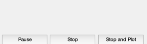
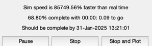
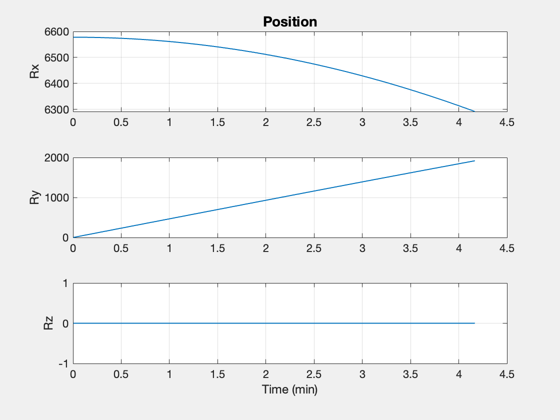
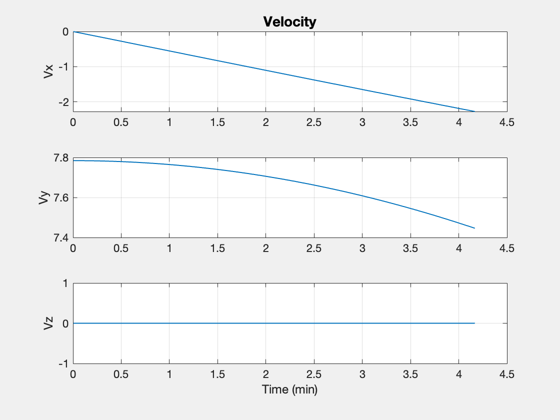
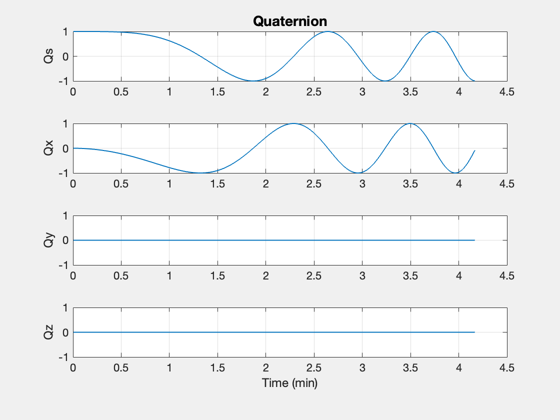
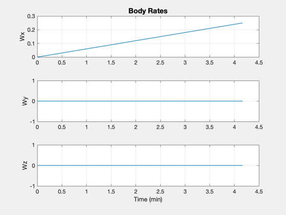
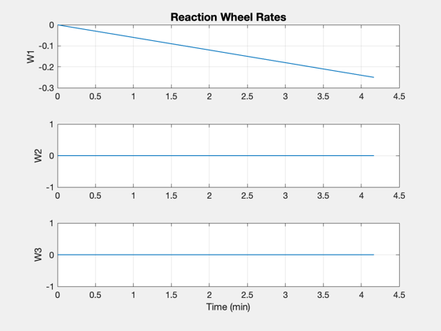

Implements and simulates a spacecraft with 3 orthogonal reaction wheels.
The spacecraft is given an external disturbance in the x axis. The function 'RHSRWASC' is used for the right-hand-side of the numerical integration.
This also shows how to use the time display.
See also RHSRWASC and ReactionWheel, Plot2D, TimeGUI, TimeLabl, RK4 -------------------------------------------------------------------------
Contents
%-------------------------------------------------------------------------- % Copyright (c) 2003 Princeton Satellite Systems, Inc. % All rights reserved. %--------------------------------------------------------------------------
Global for the time interface
%------------------------------- global simulationAction simulationAction = ' ';
Sim data
%----------
nSim = 1000;
dTSim = 0.25;
Initialize the reaction wheel model with the data stored in the model
%----------------------------------------------------------------------- ReactionWheel('initialize');
Spacecraft data
%----------------- d = ReactionWheel('get default datastructure'); sim.inertia = diag([100 80 150]); sim.inrRWA = d.inertia; sim.mu = 3.98600436e5; sim.tDist = [0.1;0;0]; % External disturbance
Initial state
%---------------
rECI = [6578;0;0];
vECI = [0;sqrt(sim.mu/rECI(1));0];
qECIToBody = [1;0;0;0];
w = [0;0;0];
wRWA = [0;0;0];
angleRWA = [0;0;0];
frictionRWA = [0;0;0];
Put the state together
%------------------------
x = [rECI;vECI;qECIToBody;w;angleRWA;wRWA;frictionRWA];
t = 0;
Initialize the time display
%----------------------------- [ratioRealTime, tToGoMem] = TimeGUI( nSim, 0, [], 0, dTSim, 'Spacecraft with Reaction Wheels' );
Allocate memory for arrays
%----------------------------
tPlot = zeros( 1,nSim);
xPlot = zeros(22,nSim);
Run the simulation
-------------------
for k = 1:nSim % Display the status message %--------------------------- [ ratioRealTime, tToGoMem ] = TimeGUI( nSim, k, tToGoMem, ratioRealTime, dTSim ); % Integrate one step %------------------- x = RK4(@RHSRWASC, x, dTSim, t, sim ); t = t + dTSim; % Store for plotting %------------------- tPlot(k) = t; xPlot(:,k) = x; % Time control %------------- switch simulationAction case 'pause' pause simulationAction = ' '; case 'stop' return; case 'plot' break; end end
Adjust the arrays if you quit early
%-------------------------------------
j = 1:k;
xPlot = xPlot(:,j);
[tPlot, c ] = TimeLabl( tPlot(j) );
Plot
%------ Plot2D( tPlot, xPlot( 1: 3,:), c, ['Rx';'Ry';'Rz'], 'Position' ) Plot2D( tPlot, xPlot( 4: 6,:), c, ['Vx';'Vy';'Vz'], 'Velocity' ) Plot2D( tPlot, xPlot( 7:10,:), c, ['Qs';'Qx';'Qy';'Qz'], 'Quaternion' ) Plot2D( tPlot, xPlot(11:13,:), c, ['Wx';'Wy';'Wz'], 'Body Rates' ) Plot2D( tPlot, xPlot(17:19,:), c, ['W1';'W2';'W3'], 'Reaction Wheel Rates' ) %-------------------------------------- % $Id: 74f9eaa89080ff6b8235d54b6296a7c0dc200709 $    